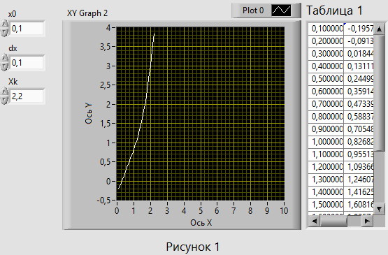
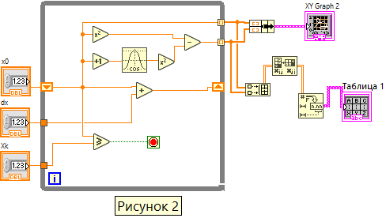

На рисунке 1 представлена лицевая панель ВП, который реализует вычисление значения функции y=x2-cos2(x+1) в зависимости от значения аргумента х в диапазоне от x0=0,1 до xk=2,2 и построение графика этой функции. На рисунке 2 представлена блок-диаграмма данного ВП.
В таблице 1 на лицевой панели представлены вычисленные значения функции для каждого значения аргумента в заданном диапазоне
